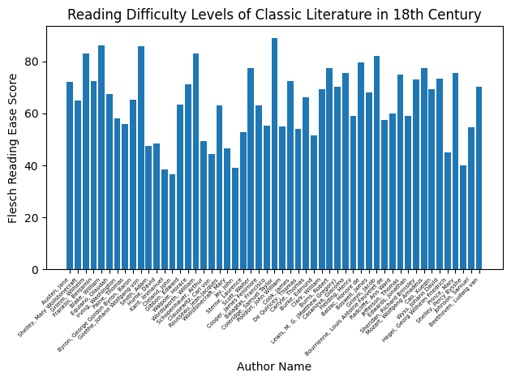
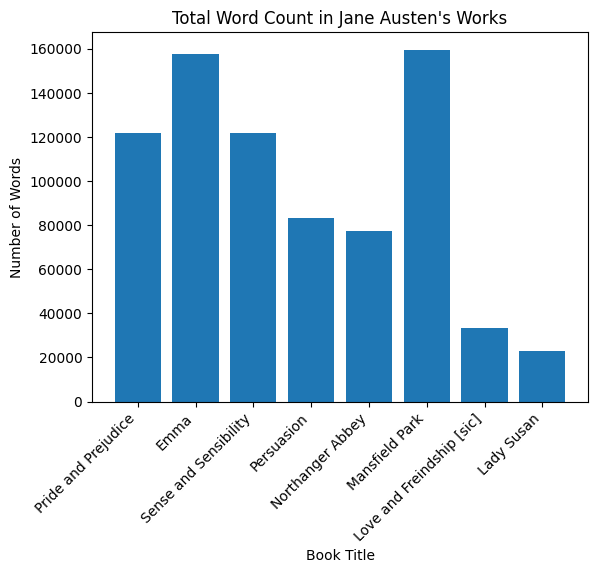
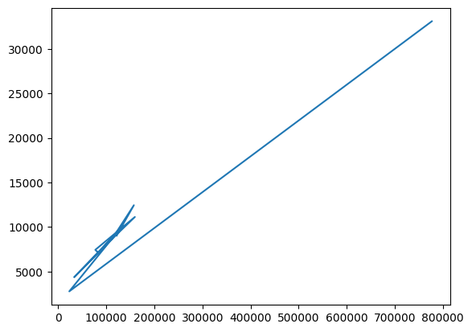
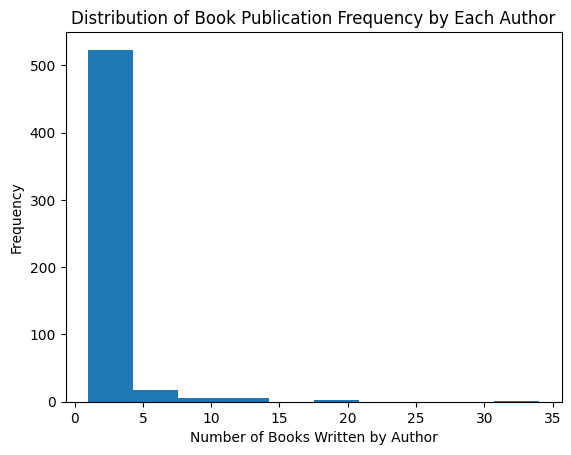

My final project datasets include the “classics” dataset from corgis, and various books written by Jane Austen from Project Gutenberg. I am motivated to conduct analysis about Jane Austen because she was one of the greatest female novelists in the 18th century. Her works always express a well-articulated crique and reflection about romance, marriage, wealth, and society, which led me to ask the question: what is the unique writing style or characteristic of Jane Austen? To answer this question, I will be using data from the following sources: https://corgis-edu.github.io/corgis/csv/classics/ https://www.gutenberg.org/ebooks/31100
Exploring the Data
The classics dataset includes data about 1006 books from the work of 555 authors. For each book, the dataset provides general information such as publication year and classification, also word analysis information such as number of sentences or reading difficulty level scores. Some potential flaws in the data are overlapping information and missing/misleading publication year. The book “Pride and Prejudice”, for example, have two versions that is one updated and another older. Publication year may also be misleading as the year may reflect a more recent, edited publication of the book rather than the original publication year. Data cleaning is required before substantive analysis is conducted.
import pandas as pddataset ="classics.csv"classic_data = pd.read_csv('classics.csv')classic_data.head()
# Data Visualization 1import matplotlib.pyplot as pltauthor_birth_year = classic_data['bibliography.author.birth']filtered_data = classic_data[author_birth_year.between(1700, 1799)]author_name = filtered_data['bibliography.author.name']readability_score = filtered_data['metrics.difficulty.flesch reading ease']plt.bar(author_name, readability_score)plt.xlabel("Author Name")plt.ylabel("Flesch Reading Ease Score")plt.title("Reading Difficulty Levels of Classic Literature in 18th Century")plt.xticks(rotation=45, ha='right', fontsize=5)plt.tight_layout()plt.show()

Comment: Jane Austen’s work has an average flesch reading score of about 70, which is a fairly easy to read level (7th grade material according to official flesch reading ease website).
# Data Visualization 2book_title = jane_data['bibliography.title']title_to_exclude ='The Complete Project Gutenberg Works of Jane Austen: A Linked Index of all PG Editions of Jane Austen'filtered_book_title = book_title[~(book_title == title_to_exclude)]num_words = jane_data['metrics.statistics.words']filtered_num_words = jane_data.loc[~(book_title == title_to_exclude), 'metrics.statistics.words']plt.bar(filtered_book_title, filtered_num_words)plt.title("Total Word Count in Jane Austen's Works")plt.xlabel("Book Title")plt.ylabel("Number of Words")plt.xticks(rotation=45, ha='right')plt.show()

Comment: Jane Austen writes both short and long novels.
# Data Visualization 3num_words = jane_data['metrics.statistics.words']readability = jane_data['metrics.difficulty.difficult words']plt.plot(num_words, readability)plt.show()

# Data Visualization 4author_book_count = classic_data.groupby('bibliography.author.name')['bibliography.title'].count()plt.hist(author_book_count)plt.xlabel('Number of Books Written by Author')plt.ylabel('Frequency')plt.title('Distribution of Book Publication Frequency by Each Author')plt.show()

Comment: Jane Austen had 8 publications, which is substantially more compared to other classics authors. What are potential factors for this? Her career as a novelist? More talent? Personal life? Time period? Jane was born into a wealthy family and she was sponsored the entire life by her brother to work on literature.
Analysis
For my analysis, I plan to webscrape the Project Gutenberg’s complete collection of works by Jane Austen. I would write a function that retrieves each books’ text file from the website, then split each text into string according to chapters. The end result would be 8 strings with eacch string item being one chapter of that particular book.
import requeststarget_url ="https://www.gutenberg.org/cache/epub/42671/pg42671.txt"response = requests.get(target_url)pp_string = response.textpp_string = pp_string.split('***START OF THE PROJECT GUTENBERG EBOOK PRIDE AND PREJUDICE***')[1]pp_string = pp_string.split('***END OF THE PROJECT GUTENBERG EBOOK PRIDE AND PREJUDICE***')[0]pp_chapters = [i.lower() for i in pp_string.split('CHAPTER')[1:]]
print(pp_chapters[0])
i.
it is a truth universally acknowledged, that a single man in possession
of a good fortune, must be in want of a wife.
however little known the feelings or views of such a man may be on his
first entering a neighbourhood, this truth is so well fixed in the minds
of the surrounding families, that he is considered as the rightful
property of some one or other of their daughters.
"my dear mr. bennet," said his lady to him one day, "have you heard that
netherfield park is let at last?"
mr. bennet replied that he had not.
"but it is," returned she; "for mrs. long has just been here, and she
told me all about it."
mr. bennet made no answer.
"do not you want to know who has taken it?" cried his wife impatiently.
"_you_ want to tell me, and i have no objection to hearing it."
this was invitation enough.
"why, my dear, you must know, mrs. long says that netherfield is taken
by a young man of large fortune from the north of england; that he came
down on monday in a chaise and four to see the place, and was so much
delighted with it that he agreed with mr. morris immediately; that he is
to take possession before michaelmas, and some of his servants are to be
in the house by the end of next week."
"what is his name?"
"bingley."
"is he married or single?"
"oh! single, my dear, to be sure! a single man of large fortune; four
or five thousand a year. what a fine thing for our girls!"
"how so? how can it affect them?"
"my dear mr. bennet," replied his wife, "how can you be so tiresome! you
must know that i am thinking of his marrying one of them."
"is that his design in settling here?"
"design! nonsense, how can you talk so! but it is very likely that he
_may_ fall in love with one of them, and therefore you must visit him as
soon as he comes."
"i see no occasion for that. you and the girls may go, or you may send
them by themselves, which perhaps will be still better, for as you are
as handsome as any of them, mr. bingley might like you the best of the
party."
"my dear, you flatter me. i certainly _have_ had my share of beauty, but
i do not pretend to be any thing extraordinary now. when a woman has
five grown up daughters, she ought to give over thinking of her own
beauty."
"in such cases, a woman has not often much beauty to think of."
"but, my dear, you must indeed go and see mr. bingley when he comes into
the neighbourhood."
"it is more than i engage for, i assure you."
"but consider your daughters. only think what an establishment it would
be for one of them. sir william and lady lucas are determined to go,
merely on that account, for in general you know they visit no new
comers. indeed you must go, for it will be impossible for _us_ to visit
him, if you do not."
"you are over scrupulous surely. i dare say mr. bingley will be very
glad to see you; and i will send a few lines by you to assure him of my
hearty consent to his marrying which ever he chuses of the girls; though
i must throw in a good word for my little lizzy."
"i desire you will do no such thing. lizzy is not a bit better than the
others; and i am sure she is not half so handsome as jane, nor half so
good humoured as lydia. but you are always giving _her_ the
preference."
"they have none of them much to recommend them," replied he; "they are
all silly and ignorant like other girls; but lizzy has something more of
quickness than her sisters."
"mr. bennet, how can you abuse your own children in such a way? you take
delight in vexing me. you have no compassion on my poor nerves."
"you mistake me, my dear. i have a high respect for your nerves. they
are my old friends. i have heard you mention them with consideration
these twenty years at least."
"ah! you do not know what i suffer."
"but i hope you will get over it, and live to see many young men of four
thousand a year come into the neighbourhood."
"it will be no use to us, if twenty such should come since you will not
visit them."
"depend upon it, my dear, that when there are twenty, i will visit them
all."
mr. bennet was so odd a mixture of quick parts, sarcastic humour,
reserve, and caprice, that the experience of three and twenty years had
been insufficient to make his wife understand his character. _her_ mind
was less difficult to develope. she was a woman of mean understanding,
little information, and uncertain temper. when she was discontented she
fancied herself nervous. the business of her life was to get her
daughters married; its solace was visiting and news.
# Data visualization 1 --> Overall Sentiment# Compute the overall polarity score of positive and negative words in each book# Combine into one visualization
# Data visualization 2 --> Sentiment Development# Compute development of sentiment in each book# Combine into one visualization
# Data visualization 3 --> Character Analysis# Create a graph of character interactions and relationships# then use networkx and matplotlib to visualizae the network
# Data visualization 4 --> Important Sentences# Use techniques of automatic bulletting# Generate a list of important sentences from each book# then visualize using stacked bar chart for what percentage is positive or negative